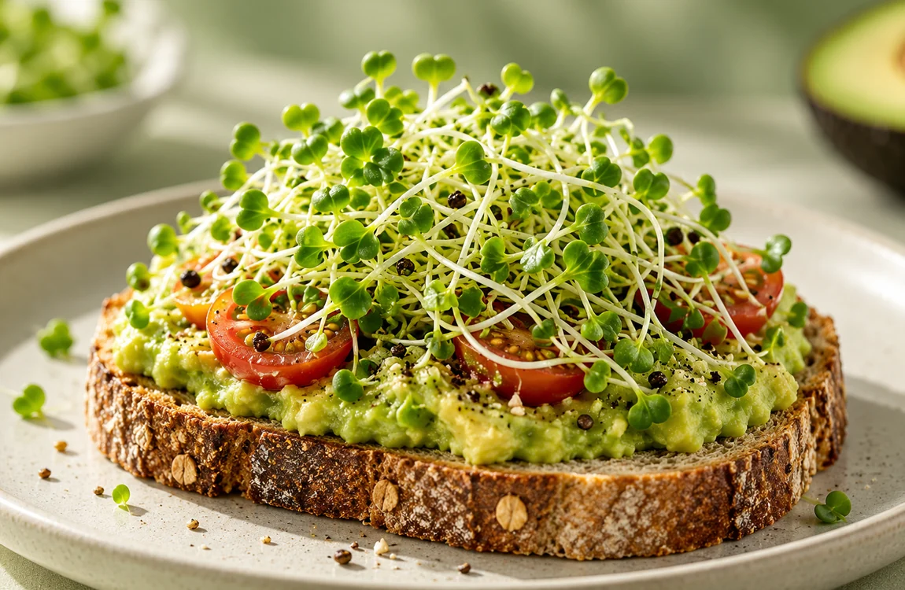

Ready to order online
Broccoli
Delicate little green shoots with a fresh, gently peppery flavour. An easy addition to toast, sandwiches and salads.
Delicate little green shoots with a fresh, gently peppery flavour. An easy addition to toast, sandwiches and salads.
Bright, punchy and peppery. A lovely way to bring fresh flavour and a little colour to your everyday meals.
Juicy, crunchy stems with a gentle nutty flavour. Especially good in noodle dishes, soups and stir-fries.
Fine, slender sprouts with a gentle onion-like flavour. A savoury finishing touch for salads and bowls.
A lively, mustardy bite with a crisp finish. Wonderful scattered over sandwiches, salads and savoury bowls.
Gently earthy and nutty, with a distinctive aromatic flavour. Try them in grain bowls and hearty salads.
Fine, tender shoots with a mild, fresh flavour. A simple topping for wraps, toast and sandwiches.
Tender shoots sprouted from green peas, with a fresh, pleasantly sweet pea flavour. Enjoy them as a colourful addition to salads and bowls.
About these profiles: These nutritional highlights reflect published studies and food-composition records; the listed nutrients and plant compounds have not been measured in MicroSprouts batches. Levels vary by seed variety, growing conditions and harvest age. Laboratory findings are not proof of disease prevention or treatment. These descriptions are not claims that a serving is a significant source of any listed vitamin or mineral.

Everyday goodness
A little handful can brighten up familiar meals. Here are a few simple places to start: